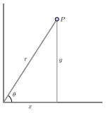

Are there alternative methods for representing locations in space?
What are polar coordinates? How are polar coordinates useful?
What are spherical coordinates? How are spherical coordinates related to rectangular coordinates? How is the conversion done?
When it comes to describing locations in two or three dimensions, there are various approaches beyond using the rectangular \((x,y,z)\) coordinate system. In this section, we study a few coordinate systems that are generally useful in meteorology.
Example3.4.1.Pressure as a Vertical Coordinate.
In modeling the atmosphere, it often makes sense to change the vertical coordinate height (\(z\)) to pressure (\(p\)). The hydrostatic equation
\begin{equation*}
\frac{dp}{dz} = -\rho g
\end{equation*}
is what allows us to do this. Here \(\rho\) is the density of air, \(g\) is the gravitational constant, \(p\) represents pressure, and \(z\) represents height. For an ideal gas, density \(\rho\) is proportional to pressure \(p\) and inversely proportional to temperature \(T\text{.}\) That is, \(\rho = c \frac{p}{T}\) for some constant \(c\text{.}\) That is,
\begin{equation*}
\frac{dp}{dz}=\left(-\frac{cg}{T}\right) p.
\end{equation*}
This equation tells us that pressure falls off exponentially with height (the only functions \(p(z)\) whose derivatives are constant multiples of themselves are exponential functions). That is, there is a one-to-one correspondence between a heights \(z\) and pressures \(p\text{.}\) This is why we can uniquely describe the location \((x,y,p)\) of any air parcel using its pressure \(p\) rather than its height \(z\text{.}\) There are advantages and disadvantages to using pressure \(p\) as the vertical coordinate.
Figure3.4.2.Left: Atmospheric pressure \(p\) (in hPa) is in one-to-one correspondence with height \(z\) (in km). Right: Heights in a column of air correspond to distinct pressure readings.
Example3.4.3.Isentropic Coordinates.
A less familiar vertical coordinate to use in place of height \(z\) is \(\theta\) -- a combination of temperature and pressure. Its value gets larger the higher you go in the atmosphere, sort of like altitude. In large-scale stratospheric flow conditions, air parcels move so as to conserve potential temperature (i.e. adiabatically, without losing or gaining heat). Winds in the atmosphere blow along surfaces of constant potential temperature \(\theta \) most of the time, making it an advantageous choice for a vertical coordinate. A simple rule-of-thumb for converting potential temperature \(\theta\) to height \(z\) (via Crutzen and Freie) is given by \(\theta/25 = z\) where \(z\) is measured in kilometers. Other formulas relating potential temperature \(\theta\) to height \(z\text{,}\)\(\theta = 350e^{0.45(z-13)}\) or \(0.635\theta -9.22 = z\text{,}\) also demonstrate the one-to-one correspondence between these variables (John Knox, NASA 52 
Figure3.4.4.Left: Example potential temperature profile with latitude for February. Right: Example potential temperature profile with latitude for July. Source: NWS Climate Prediction Center 53 
In what follows, we study coordinate systems in widespread use due to their value in describing behavior involving circular or spherical regions.
Subsection3.4.1Polar Coordinates
The rectangular coordinate system can be thought of as a means to provide directions to a particular location in the plane. From a "home" position (the origin), if we walked \(1\) unit east and \(\sqrt{3}\) units south to reach a location \(P\text{,}\) we would denote such directions by the ordered pair \((1,-\sqrt{3})\text{.}\)Figure 3.4.5 shows another ways we could describe how to reach location \(P\) from the origin. If we are standing at the origin facing east (in the direction of the positive \(x\)-axis), we could reach \(P\) by turning our body \(\theta=60^{\circ}\) (\(\frac{\pi}{3}\) radians) clockwise and walking \(2\) units forward. Such directions could be represented by the ordered pair \(\left( 2,-\frac{\pi}{3}\right)\) or \(\left( 2, -60^{\circ} \right)\text{.}\) We use a negative sign for the angle of rotation \(\theta\) since counterclockwise is normally treated positively in mathematics. These ordered pairs, or directions, are polar coordinates.
Figure3.4.5.Different directions to reach location \(P\text{.}\)
It is often easier to describe circular behavior using polar coordinates than by using rectangular coordinates. The equation of a unit circle, for example, can be describe by \(\theta=1\) in polar coordinates. This is less complicated than the equation \(x^2 + y^2 = 1\) used to describe this circle using rectangular coordinates.
The rectangular coordinates of a point \(P\) are given by an ordered pair \((x,y)\text{,}\) where \(x\) is the (signed) distance the point lies from the \(y\)-axis to \(P\) and \(y\) is the (signed) distance the point lies from the \(x\)-axis to \(P\text{.}\) In polar coordinates, we locate the point by considering the distance \(r\) the point lies from the origin, \(O = (0,0)\text{,}\) and the angle \(\theta\) the line segment from the origin to \(P\) forms with the positive \(x\)-axis.
Example3.4.6.Polar to Rectangular Conversions.
Point \(P\) lies 2 units east of the origin and \(\overline{OP}\) makes an angle of \(90^{\circ}\) (\(\frac{\pi}{2}\) radians) with the positive \(x\)-axis. The polar coordinates for point \(P\) are \(\left(2,90^{\circ}\right)\text{.}\) The rectangular coordinates for point \(P\) are \(\left( 0,2 \right)\text{.}\)
Figure3.4.7.Point \(P\) has polar coordinates of \((2,90^{\circ})\) and rectangular coordinates of \((0,2)\text{.}\)
Checkpoint3.4.8.More Polar and Rectangular Conversions.
Determine both polar and rectangular coordinates of the following points.
The point \(Q\) that lies 1 unit east of the origin on the positive \(x\)-axis.
The point \(R\) that lies 3 units from the origin such that \(\overline{OR}\) makes an angle of \(120^{\circ}\) (\(\frac{2\pi}{3}\) radians) with the positive \(x\)-axis.
Answer.
Polar coordinates are \((1,0^{\circ})\text{.}\) Rectangular coordinates are the same, \((1,0)\text{.}\)
Polar coordinates are \((3,120^{\circ})\) or \(\left(3,\frac{2\pi}{3}\right)\text{.}\) Rectangular coordinates are \(\left( 3\cos(120^{\circ}),3\sin(120^{\circ}) \right)\) or \(\left(-1.5,\frac{3\sqrt{3}}{2} \right)\text{.}\)
Polar coordinates \((3,120^{\circ})\text{.}\)
Figure3.4.9.Point \(R\) has polar coordinates of \((3,120^{\circ})\) and rectangular coordinates of \(\left(-1.5,\frac{3\sqrt{3}}{2} \right)\text{.}\)
Checkpoint3.4.10.Converting from Polar to Rectangular Coordinates.
Convert each of the following from polar to rectangular coordinates.
\(\displaystyle (3,60^{\circ})\)
\(\displaystyle (2,3\pi/2)\)
\(\displaystyle (6,-150^{\circ})\)
Answer.
Using equations (3.3) with \(r=3\) and \(\theta = 60^{\circ}\) gives \(x=3\cos (60^{\circ}) = \frac{3}{2}\) and \(y=3\sin (60^{\circ}) = \frac{3\sqrt{3}}{2}\text{.}\) Therefore this point can be represented as \(\left( \frac{3}{2}, \frac{3\sqrt{3}}{2} \right)\) in rectangular coordinates.
Using equations (3.3) with \(r=2\) and \(\theta = \frac{3\pi}{2}\) gives \(x=2\cos (3\pi/2) = 0\) and \(y=2\sin (3\pi/2) = -2\text{.}\) Therefore this point can be represented as \(\left(0, -2 \right)\) in rectangular coordinates.
Using equations (3.3) with \(r=6\) and \(\theta = -150^{\circ}\) gives \(x=6\cos (-150^{\circ}) = -3\sqrt{3}\) and \(y=6\sin (-150^{\circ}) = -3\text{.}\) Therefore this point can be represented as \(\left( -3\sqrt{3}, -3 \right)\) in rectangular coordinates.
Example 3.4.6 and Checkpoint 3.4.8 indicate that the two pieces of information completely determine the location of a point: either the traditional \((x,y)\) coordinates, or alternately, the distance \(r\) from the point to the origin along with the angle \(\theta\) that the line through the origin and the point makes with the positive \(x\)-axis. We write \((r, \theta)\) to denote the point’s location in its polar coordinate representation.

Figure3.4.11.Left: The relationship between the polar coordinates \((r,\theta)\) of a point \(P\) and the rectangular coordinates \((x,y)\) of \(P\text{.}\) Right: The polar coordinate grid.
The rectangular coordinate system is best suited for graphs and regions that are naturally considered over a rectangular grid. The polar coordinate system is an alternative that offers good options for functions and domains that have more circular characteristics. Trigonometry and the Pythagorean theorem allow for straightforward conversion from rectangular to polar coordinate systems, and vice versa.
Converting between rectangular and polar coordinates.
Converting from rectangular to polar.
If we are given the rectangular coordinates \((x,y)\) of a point \(P\text{,}\) then the polar coordinates \((r,\theta)\) of \(P\) satisfy
\begin{equation}
r = \sqrt{x^2+y^2} \ \ \ \ \text{ and } \ \ \ \ \tan(\theta) = \frac{y}{x}, \text{ assuming } x \neq 0.\tag{3.2}
\end{equation}
Converting from polar to rectangular.
If we are given the polar coordinates \((r,\theta)\) of a point \(P\text{,}\) then the rectangular coordinates \((x,y)\) of \(P\) satisfy
\begin{equation}
x = r\cos(\theta) \ \ \ \ \text{ and } \ \ \ \ y = r\sin(\theta).\tag{3.3}
\end{equation}
Note: The sign of \(\tan(\theta)\) does not uniquely determine the quadrant in which \(\theta\) lies, so we have to determine the value of \(\theta\) from the location of the point. In other words, more care has to be paid when using polar coordinates than rectangular coordinates.
Example3.4.12.Converting from Rectangular to Polar Coordinates.
Convert each of the following points from rectangular to polar coordinates.
\(\displaystyle (1,1)\)
\(\displaystyle (-3,4)\)
\(\displaystyle (0,3)\)
\(\displaystyle (5\sqrt{3},-5)\)
Answer.
Using equations (3.2), with \(x=1\) and \(y=1\) gives \(r^2=1^2+1^2=2\) or \(r=\sqrt{2}\) and \(\tan\theta = \frac{1}{1} = 1\) or \(\theta = \frac{\pi}{4} = 45^{\circ}\text{.}\) The point \((1,1)\) can be represented as either \(\left( \sqrt{2}, 45^{\circ} \right)\) or \(\left( \sqrt{2}, \frac{\pi}{4} \right)\) in polar coordinates.
Again using equations (3.2), but this time with \(x=-3\) and \(y=4\) gives \(r^2=(-3)^2+4^2=25\) or \(r=5\) and \(\tan\theta = -\frac{4}{3}\text{.}\) Since the point \((-3,4)\) lies in quadrant II, we compute \(\theta = \pi+\arctan(-4/3) \approx 2.21\) radians (about 127 degrees).
Here \(r^2=0^2+3^2 = 9\) so that \(r=3\text{.}\) From equations (3.2) we also have \(\tan\theta = \frac{3}{0}\text{.}\) Direct application of the second equation leads to division by zero! Graphing the point \((0,3)\) on the rectangular coordinate system reveals that the point is located on the positive \(y\)-axis. The angle between the positive \(x\)-axis and the positive \(y\)-axis is \(90^{\circ}\) (\(\frac{\pi}{2}\) radians). Therefore this point can be represented as either \(\left( 3, 90^{\circ}\right)\) or \(\left(3,\frac{\pi}{2}\right)\) in polar coordinates.
Using equations (3.2), with \(x=5\sqrt{3}\) and \(y=-5\) gives \(r^2=(5\sqrt{3})^2+(-5)^2=100\) or \(r=10\) and \(\tan\theta = \frac{-5}{5\sqrt{3}} = -\frac{\sqrt{3}}{3}\) or \(\theta = -\frac{\pi}{6} = -30^{\circ}\text{.}\) The point \((5\sqrt{3},-5)\) can thus be represented as either \(\left( 10, 330^{\circ}\right)\) or \(\left( 10, -\frac{\pi}{6} \right)\) in polar coordinates.
Example3.4.13.PPI (Radar).
Radar supplies data in a format closely related to polar coordinates. Rather than supplying the polar angle \(\theta\text{,}\) data is stored in a table of range-azimuth ordered pairs \((r,\beta)\) where \(\beta\) is the azimuth sometimes also denoted by \(\phi_{vect}\text{.}\) The azimuth measures the angle in a clockwise fashion with \(0^{\circ}\) as due north.
Figure3.4.14.Left: Image of a thunderstorm on a PPI. (Source: Public Domain (NOAA)) Right: Radar supplies the location at point \(P\) as a range-azimuth ordered pair \((r,\beta)\text{.}\) The angle \(\beta\) is the angle measured clockwise from the axis pointing due north and the segment connecting the pole \(O\) with the point \(P\text{.}\)
A plan position indicator (PPI) is a type of radar display that represents the radar antenna in the center of the display, with the distance from it drawn as concentric circles. As the radar antenna rotates, a radial trace on the PPI sweeps in unison with it about the center point. To generate a picture similar to a PPI on a raster scan monitor with a line sequential image (such as a television or computer monitor), this radar data must first be converted to rectangular coordinates \((x,y)\text{.}\) Since \(\theta = 90^{\circ}-\beta\text{,}\) the equations
Convert PPI data sent in Table 3.4.16 to rectangular coordinates \((x,y)\) and a color \(c\) for a \(1920 \times 1080\) computer monitor. Place the radar antenna at the center of the screen.
Table3.4.16.PPI data.
\(r\)
\(\beta\)
color \(c\)
2
90
blue
30
120
white
30
180
red
Answer.
In order for the antenna to be located at the center of the screen, each \(x\)-value must be shifted \(1920/2 = 960\) units right and each \(y\)-value must be shifted \(1080/2=540\) units up. For example, the ordered pair \((3,120^{\circ})\) is converted to \(x=960+30\cos(90^{\circ}-120^{\circ})\approx 986\) and \(y=540+30\sin(90^{\circ}-120^{\circ})=525 \)
Table3.4.17.Converted PPI data.
\(x\)
\(y\)
color \(c\)
962
540
blue
986
525
white
960
510
red
The polar representation of a point is not unique. For example, the polar coordinates \(\left( 2, 60^{\circ} \right)\) and \(\left( 2, 420^{\circ} \right)\) both represent the point \((1,\sqrt{3})\) in the rectangular system. Also, the value of \(r\) can be negative. Therefore, the point with polar coordinates \(\left(-2,240^{\circ}\right)\) also represents the point \((1,\sqrt{3})\) in the rectangular system. Every point in the plane has an infinite number of representations in polar coordinates. However, each point in the plane has only one representation in the rectangular coordinate system.
Subsection3.4.2Spherical Coordinates
We have encountered two different coordinate systems in the plane — the rectangular and polar coordinates systems — and seen how polar coordinates form a convenient alternative. In a similar way, there is an additional natural coordinate system, spherical coordinates, in three-dimensional space. We now investigate this system (which builds upon polar coordinates in the plane).
Figure3.4.18.The spherical coordinates of a point. Any point in space can be represented in spherical coordinates with \(\rho \geq 0\text{,}\)\(0 \leq \theta \lt 2 \pi\text{,}\) and \(0 \leq \phi \leq \pi\text{.}\) See, for example, https://www.geogebra.org/m/h9xS5ZZs 54 
https://www.geogebra.org/m/h9xS5ZZs
.
The spherical coordinates of a point in space are \(\rho\) (rho), \(\theta\text{,}\) and \(\phi\) (phi), where \(\rho\) is the distance from the point to the origin, \(\theta\) has the same interpretation it does in polar coordinates, and \(\phi\) is the angle between the positive \(z\) axis and the vector from the origin to the point, as illustrated in Figure 3.4.18. You should convince yourself that any point in space can be represented in spherical coordinates with \(\rho \geq 0\text{,}\)\(0 \leq \theta \lt 2 \pi\text{,}\) and \(0 \leq \phi \leq \pi\text{.}\)
Example3.4.19.Converting Latitude and Longitude to Spherical Coordinates.
The latitude of Columbus, Ohio, is \(40^{\circ}\) N and the longitude is \(83^{\circ}\) W. The radius of Earth is 3961 miles. The location of Columbus in spherical coordinates can be described by \((3961, -83^{\circ}, 50^{\circ})\text{.}\) We use \(\phi=50^{\circ}\) since that is the angle Columbus makes with the positive \(z\)-axis which is runs from the center of Earth through the north pole. \(40^{\circ}\) is the angle Columbus makes with the equator. Longitude \(\theta=-83^{\circ}\) is measured in degrees east of the \(xz\)-plane.
Figure3.4.20.In the latitude–longitude system, angles describe the location of a point on Earth relative to the equator and the prime meridian. Source:OpenStax Calculus Volume 3 55 
Checkpoint3.4.21.Where in the World is Washington, DC?
Washington, DC, is located at \(39^{\circ}\) N and \(77^{\circ}\) W (see Figure 3.4.22). The radius of Earth is 3961 miles. Express the location of Washington, DC, in spherical coordinates.
We have \(\rho=3961\text{,}\)\(\theta = -77^{\circ}\text{,}\) and \(\phi=90^{\circ}-39^{\circ} = 51^{\circ}\text{.}\) So the spherical coordinates are \((3961, -77^{\circ},51^{\circ})\text{.}\)
Example 3.4.19 demonstrates why the angle \(\phi\) is sometimes called the cone angle or the colatitude. The angle \(\theta\) is called the polar angle or longitude.
Activity1.
For the following questions, consider the point \(P\) whose Cartesian coordinates are \((-2,2,\sqrt{8})\text{.}\)
What is the distance from \(P\) to the origin? Your result is the value of \(\rho\) in the spherical coordinates of \(P\text{.}\)
Determine the point that is the projection of \(P\) onto the \(xy\)-plane. Then, use this projection to find the value of \(\theta\) in the polar coordinates of the projection of \(P\) that lies in the plane. Your result is also the value of \(\theta\) for the spherical coordinates of the point.
Based on the illustration in Figure 3.4.18, how is the angle \(\phi\) determined by \(\rho\) and the \(z\) coordinate of \(P\text{?}\) Use a well-chosen right triangle to find the value of \(\phi\text{,}\) which is the final component in the spherical coordinates of \(P\text{.}\) Draw a carefully labeled picture that clearly illustrates the values of \(\rho\text{,}\)\(\theta\text{,}\) and \(\phi\) in this example, along with the original rectangular coordinates of \(P\text{.}\)
Based on your responses to (a), (b), and (c), if we are given the Cartesian coordinates \((x,y,z)\) of a point \(Q\text{,}\) how are the values of \(\rho\text{,}\)\(\theta\text{,}\) and \(\phi\) in the spherical coordinates of \(Q\) determined by \(x\text{,}\)\(y\text{,}\) and \(z\text{?}\)
As we saw in Activity 1, the spherical coordinates of a point in 3-space have the form \((\rho, \theta, \phi)\text{,}\) where \(\rho\) is the distance from the point to the origin, \(\theta\) has the same meaning as in polar coordinates, and \(\phi\) is the angle between the positive \(z\) axis and the vector from the origin to the point. The overall situation is illustrated in Figure 3.4.18.
Figure3.4.23.Converting from spherical to Cartesian coordinates.
The example in Activity 1 and Figure 3.4.23 suggest how to convert between Cartesian and spherical coordinates.
Coverting between Cartesian and spherical coordinates.
Converting from Cartesian to spherical.
If we are given the Cartesian coordinates \((x,y,z)\) of a point \(P\text{,}\) then the spherical coordinates \((\rho,\theta,\phi)\) of \(P\) satisfy
where in the latter two equations, we require \(x \ne 0\) and \(\rho \ne 0\text{.}\)
Converting from spherical to Cartesian.
If we are given the spherical coordinates \((\rho,\theta,\phi)\) of a point \(P\text{,}\) then the Cartesian coordinates \((x,y,z)\) of \(P\) satisfy
\begin{equation}
x = \rho \sin(\phi) \cos(\theta) \ \ \ \ \ y = \rho \sin(\phi) \sin(\theta) \ \ \ \ \ \text{ and } \ \ \ \ \ z = \rho \cos(\phi).\tag{3.6}
\end{equation}
Example3.4.24.Rectangular Coordinates of Columbus, OH.
In Example 3.4.19, the spherical coordinates of Columbus, OH, were described by \((4000, -83^{\circ}, 50^{\circ})\text{.}\) Here we assumed, and continue to assume, that the origin is at the center of the earth, the positive \(x\)-axis runs from the origin to where the prime meridian and the equator intersect on the surface, and the positive \(z\)-axis runs from the origin through the north pole. In rectangular coordinates, we use (3.6) to locate Columbus at
\begin{align*}
x = \mathstrut \amp 4000\sin(50^{\circ}) \cos(-83^{\circ}) \approx 313.3 \\
y = \mathstrut \amp 4000 \sin(50^{\circ}) \sin(-83^{\circ}) \approx -2552 \\
z = \mathstrut \amp 4000 \cos(50^{\circ}) \approx 2571
\end{align*}
where all the units are miles (as measured from the center of the earth).
When it comes to thinking about particular surfaces in spherical coordinates, we usually write \(\rho\) as a function of \(\theta\) and \(\phi\text{;}\) this is a natural analog to polar coordinates, where we often think of our distance from the origin in the plane as being a function of \(\theta\text{.}\) In spherical coordinates, we likewise often view \(\rho\) as a function of \(\theta\) and \(\phi\text{,}\) thus viewing distance from the origin as a function of two key angles.
In the following activity, we explore several basic equations in spherical coordinates and the surfaces they generate.
Activity2.
In this activity, we graph some surfaces using spherical coordinates. To improve your intuition and test your understanding, you should first think about what each graph should look like before you plot it using appropriate technology.
What familiar surface is described by the points in spherical coordinates with \(\rho = 1\text{,}\)\(0 \leq \theta \leq 2\pi\text{,}\) and \(0 \leq \phi \leq \pi\text{?}\) How does this particular example demonstrate the reason for the name of this coordinate system? What if we restrict \(\phi\) to \(0 \leq \phi \leq \frac{\pi}{2}\text{?}\)
What familiar surface is described by the points in spherical coordinates with \(\phi = \frac{\pi}{3}\text{,}\)\(0 \leq \rho \leq 1\text{,}\) and \(0 \leq \theta \leq 2\pi\text{?}\)
What familiar shape is described by the points in spherical coordinates with \(\theta = \frac{\pi}{6}\text{,}\)\(0 \leq \rho \leq 1\text{,}\) and \(0 \leq \phi \leq \pi\text{?}\)
Plot the graph of \(\rho = \theta\text{,}\) for \(0 \leq \phi \leq \pi\) and \(0 \leq \theta \leq 2 \pi\text{.}\) How does the resulting surface appear?
As the name and Activity 2 indicate, spherical coordinates are particularly useful for describing curves and surfaces that are spherical in nature.
Example3.4.25.Describing a Line of Latitude.
The set of spherical coordinates \(\left\{ (\rho,\theta,\phi): \rho = 3961, 0^{\circ} \leq \theta \leq 360^{\circ}, \phi = 110^{\circ} \right\}\) describes the set of locations on the earth at the \(20^{\circ}\) S line of latitude.
Figure3.4.26.A line of latitude at \(20^{\circ}\) S.
Checkpoint3.4.27.Describing a Line of Longitude.
Use spherical coordinates to describe the \(70^{\circ}\) E line of longitude.
Answer.
Assuming that the prime meridian is located in the \(xz\)-plane and crosses the positive \(x\)-axis, the set of spherical coordinates \(\left\{ (\rho,\theta,\phi): \rho=3961, \theta=70^{\circ}, 0^{\circ} \leq \phi \leq 180^{\circ} \right\}\) describe this line.
Finally, we note that the use of spherical coordinates varies significantly. Mathematicians and meteorologists use a variety of notations and sometimes define variables differently. To illustrate this point, note that one common means of defining spherical coordinates by meteorologists appears in Figure 3.4.28.
Figure3.4.28.Meteorologists often use spherical coordinates \((r,\lambda,\varphi)\) where \(r\) is the location’s distance from the origin, \(\lambda\) is longitude, and \(\varphi\) is latitude. Longitude is measured in degrees east of the prime meridian and latitude is measured in degrees north of the equator.
Example3.4.29.The Haversine Distance Formula.
Using \((r,\lambda,\varphi)\) notation for locations on the earth, we can compute the great circle distance \(d\) (as one would traverse the surface of our beloved sphere) using the Haversine distance formula. With \(\lambda\) representing longitude and \(\varphi\) representing latitude of a location, and \(r\) representing the radius of the planet, we have
Note that when computing the arcsine, the result must be in radians.
Figure3.4.30.The great circle distance \(d\) between two points \((r,\lambda_1,\varphi_1)\) and \((r,\lambda_2,\varphi_2)\) on a sphere is given by the Haversine distance formula (3.7).
Exercises3.4.3Exercises
1.Identify Polar Coordinates.
2.Plot Point Given in Polar Coordinates.
3.Convert Polar Coordinates to Cartesian.
4.Convert Cartesian Coordinates to Polar.
5.Convert Cartesian Coordinates to Polar II.
6.Match Expressions.
7.Convert from Rectangular to Spherical Coordinates.
8.Convert from Spherical to Rectangular Coordinates.
9.Match Surfaces with Equations Described in Spherical Coordinates.
10.Convert from Cartesian Coordinates to Spherical Coordinates.
lies in the \(xy\)-plane (i.e. has \(z=\rho\cos\phi=0\)) and so has \(\phi=\frac{\pi}{2}\) and
lies on the negative \(x\)-axis and so has \(\theta=\pi\) and
is a distance \(2\) from the origin and so has \(\rho=2\text{.}\)
The point \((0,3,0)\)
lies in the \(xy\)-plane (i.e. has \(z=\rho\cos\phi=0\)) and so has \(\phi=\frac{\pi}{2}\) and
lies on the positive \(y\)-axis and so has \(\theta=\frac{\pi}{2}\) and
is a distance \(3\) from the origin and so has \(\rho=3\text{.}\)
The point \((0,0,-4)\)
lies on the negative \(z\)-axis and so has \(\phi=\pi\) and \(\theta\) arbitrary and
is a distance \(4\) from the origin and so has \(\rho=4\text{.}\)
The point \(\left(-\frac{1}{\sqrt{2}},\frac{1}{\sqrt{2}},\sqrt{3}\right)\)
has \(\rho=\sqrt{x^2+y^2+z^2}
=\sqrt{\left(-\frac{1}{\sqrt{2}}\right)^2
+\left(\frac{1}{\sqrt{2}}\right)^2
+\left(\sqrt{3}\right)^2}=\sqrt{4}=2\) and
has \(\sqrt{3}=z=\rho\cos\phi = 2\cos\phi\) so that \(\cos\phi = \frac{\sqrt{3}}{2}\) and \(\phi=\frac{\pi}{6}\) and
has \(-\frac{1}{\sqrt{2}}=x=\rho\sin\phi\cos\theta
= 2\big(\frac{1}{2}\big)\cos\theta\) so that \(\cos\theta = -\frac{1}{\sqrt{2}}\text{.}\) As \(\left(-\frac{1}{\sqrt{2}},\frac{1}{\sqrt{2}}\right)\) is in the second quadrant, we have \(\frac{\pi}{2}\le\theta\le\pi\) and so \(\theta=\frac{3\pi}{4}\text{.}\)
11.Land Down Under.
Sydney, Australia is at \(34^{\circ}\) S and \(151^{\circ}\) E. Express Sydney’s location in spherical coordinates. Assume Earth has a radius of 4000 miles.
Answer.
\(\rho = 4000\text{,}\)\(\theta = 151^{\circ}\text{,}\) and \(\phi=90^{\circ} + 34^{\circ} = 124^{\circ}\) so the spherical coordinates of Sydney are \((4000,151^{\circ},124^{\circ})\text{.}\)
12.Sydney’s Rectangular Coordinates.
Sydney, Australia is at \(34^{\circ}\) S and \(151^{\circ}\) E. Express Sydney’s location in rectangular coordinates. Spherical coordinates for Sydney were found in Exercise 3.4.3.11.
Answer.
The spherical coordinates of Sydney are \((4000,151^{\circ},124^{\circ})\text{.}\) In rectangular coordinates, we use (3.6) to locate Sydney at
\begin{align*}
x = \mathstrut \amp 4000\sin(124^{\circ}) \cos(151^{\circ}) \approx -2900 \\
y = \mathstrut \amp 4000 \sin(124^{\circ}) \sin(151^{\circ}) \approx 1608 \\
z = \mathstrut \amp 4000 \cos(124^{\circ}) \approx -2237
\end{align*}
where the units are miles.
13.Describing the Antartic.
The Antarctic is usually defined simply as that region south of \(60^{\circ}\) south latitude, S. Use spherical coordinates to describe this region as a set.
According to NASA, the combined troposphere and stratosphere reach 31 miles above the surface of the earth. Use spherical coordinates to describe this region.
Earth has a radius of approximately 3961 miles (6371 km). Use the Haversine formula to determine the great circle distance between \(30^{\circ}\) N and \(31^{\circ}\) N.
Radars use electromagnetic waves to detect objects and measure their positions in space. Object positioning is done by determining distance in relation to the radar equipment. Three coordinates: azimuth \(\phi_{vect}\) (clockwise around the vertical axis), elevation \(\varphi\) (from the horizontal axis) and the distance \(r\) from the pointing equipment. The set of measurements distance-azimuth-elevation \((r,\phi_{vect},\varphi)\) constitutes a set of spherical coordinates with the radar itself at the origin. Determine the rectangular coordiantes \((x,y,z)\) in terms of these spherical coordinates.
Figure3.4.31.Spherical coordinates \((r,\phi_{vect},\varphi)\) for radar where \(r\) is the location’s distance from the radar (origin), \(\phi_{vect}\) the azimuth (measured clockwise from the positive \(y\)-axis, and \(\varphi\) the angle of elevation (from the \(xy\)-plane).
Answer.
The rectangular coordinates are
\begin{align*}
x = \mathstrut \amp r\sin(\phi_{vect})\cos(\varphi)\\
y = \mathstrut \amp r\cos(\phi_{vect})\cos(\varphi)\\
z = \mathstrut \amp r\sin(\varphi)
\end{align*}